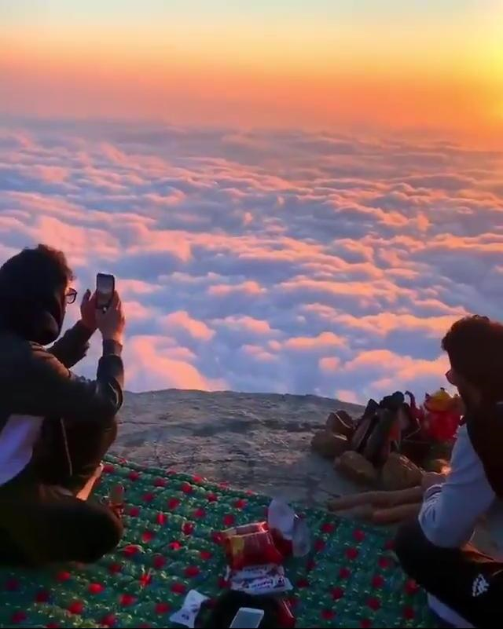
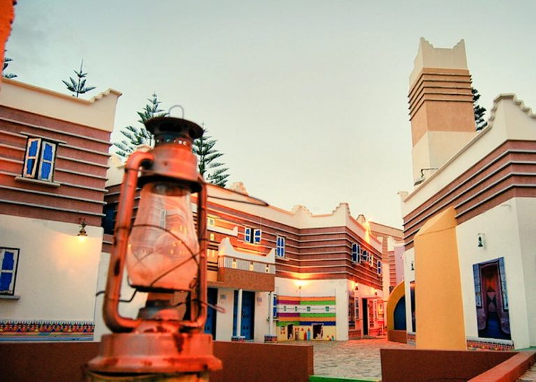
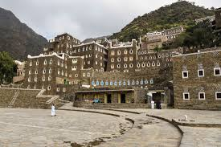
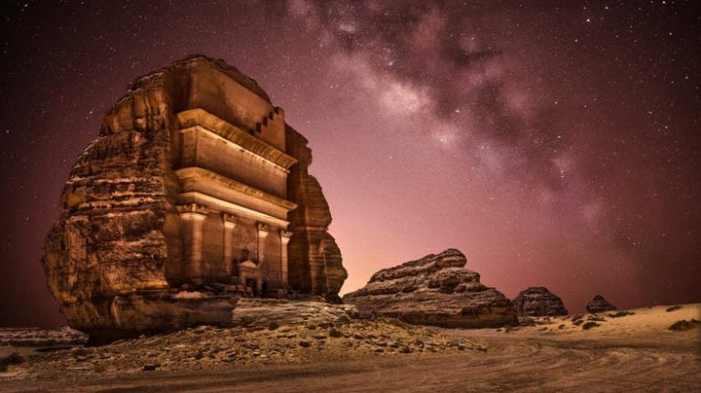

info@example.com
+012 345 6789


Everyday
9 Days Jeddah, Abha, Rijal Almaa, Riyadh, Edge of the world, Madain Saleh & Al Ula
Your tour leader/driver will be waiting you. They will be holding a sign of SaudiArabiaTours, You do not need to look for them – they will be waiting for you and will find you.
From the moment your tour starts, your tour leader will give you full attention. Once in the car, He will talk to you about all the things on the way as well as other aspects of your tour that will interest you.
You will be transferred by an A/C car to your hotel. Overnight in Jeddah.
Breakfast.Start your tour to visit Jeddah’s historical downtown area (Al-Balad) which is the historical area well known as the “Old Town”, where many of the oldest families used to live and work. It boasts of old buildings, a traditional souk and many restaurants, where visitors get to walk amid the old streets and experience the traditional landscape of the old town.
When you are in historical Jeddah we will take you back to the old era of Saudi Arabia, all your senses will be in action. You will hear and learn amazing stories about Jeddah and ride and walk through secret doors, Enjoy a wonderful walking Al-Balad.
This history tour of Old Town will take you along all the less known must-see local spots: Beit Nassif, Makkah gate for a photo stop, Historical Jeddah north gate stop for a photo, other historical houses provide a rare opportunity for you to experience the blend of traditional architecture with modernity Old Market hidden gems, Old Jeddah hidden galleries and Local Jeddah food shops only for locals no tourists know about it.
Then you will visit Al Shafi Mosque, The oldest mosque in Jeddah.
Then you will visit Al Tayebat International City Museum, It’s a maze of different rooms covering Saudi history, architecture, interior decoration, Islamic art from Saudi and other Islamic countries. The museum itself is a great place for photos.

Its four-floor collection has displays ranging from pre-Islamic artifacts, exquisite Islamic manuscripts, old coins and weaponry to stunning furniture, pottery and traditional Saudi dress. Replicas of home interiors from every region are also featured. Exhibits are accompanied by excellent information panels, as well as dioramas of the Kingdom’s provinces.
End the tour by enjoying a ride along The New Jeddah Corniche is the 30 km coastal resort area of the city of Jeddah. Located along the Red Sea, the corniche features the coastal road, recreation areas, pavilions and large-scale civic sculptures for all to enjoy and take pictures.
(Optional) Jeddah Food Tour
Overnight in Jeddah.
Breakfast. Transfer to Jeddah airport to take your flight to Abha, Arrival and transfer to start your tour visiting the Jabal Sawda is the highest point in Saudi Arabia. You will visit to see the climate and enjoy the mountains and the heights. It is 3000 meters above sea level. You will see lots of varieties of green lush trees and shrubs. Also, the misty mountains and valleys will soothe you and make you relaxed. Wonderful mental relaxation. It can get really cold so make sure to have jackets and blankets.
A cable car with an extra ticket, A beautiful trip with a rainy atmosphere will be a more exciting trip falls from the mountains. Riding the cable car & viewing Abha from above was such a wonderful experience. It takes about 20-25min to reach downhill and a similar time to return back on top. Each car can seat approximately 8 adults comfortably.
Then you will visit El Sahab Park is above a mountain. It has a beautiful view and the clouds pass you all the time. The literal translation of ‘Sahab’ is ‘cloud’. And that’s what this place is. You will have a chance to walk into clouds Cornish.

(Optional) your tour leader can recommend for you lovely restaurant in El Sahab Park to have your Lunch. you will be in between the clouds, one of the most beautiful places.the place is above a mountain.
There are two top viewpoints on this hill. They are very near to each other. Lot of monkeys there, better to take some food for them, the moment you get there, they expect you to give them food.
Then we visit the Mud-walled Shada Castle, which is now a handicrafts museum. It is a representation of the beautiful traditional architecture of Asir region. It has a variety of fascinating local handicrafts, household items and more. It is also one of the very few traditional buildings left in Abha, making it mandatory to tour when in the city. Surrounded by modern architecture, this mud-walled tower itself is a great insight into Saudi Arabia’s past.
We will drive to the Al-Muftaha district which had a market where we shopped for different kinds of crafts.

The Muftaha Village that was in a state of neglect was re-built based on inspirations from Asir’s heritage and culture. It was built using the traditional methods of construction with local mud and stones.
Al-Muftaha, in the center of the city, dates back 260 years. It incorporates adjoining houses along the internal and external passageways built according to the Asir region’s traditional construction style. It is distinguished by the small openings and thick walls that can protect the mud walls against rain and provide shade to the buildings.
You will be enjoying the traditional colored houses of the Muftaha village, Its a great chance for photos lover.
Then We will take you to a mountain which took your breath away! its Jabal Al Akhdar or as translated “The Green Mountain”. This entire mountain is lit up with green lights and even the clouds above it were green due to the lights.It was a sight to behold.
This place as it definitely takes away all your stress and gives you the perfect environment to sit and feast on its beautiful surroundings.
Overnight in Abha.
Breakfast. We will take you to Rijal Almaa village which is famous for its typical Arabian traditional architecture that can be found throughout the whole country, each region having its own specificity. But when it comes to Saudi traditional architecture the first image that comes to mind is the charming and colorful houses of Rijal Alma’. It is located 130 km by safe road from Abha or 65 Km unsafe road so of course we will take you by the safe road.

The village have stunning sceneries with great history of the region. For its exceptional features Rijal Alma’ is today on the tentative list of UNESCO World Heritage. You will find there a place redolent with history and tradition, and clearly oriented to tourism.Its a paradise for photographers and photos lovers and our tour leader will take you to the best panoramic spots for photos.
You will visit the village museum its a huge museum all inside the village with a lot of old pieces and there are a description as well in English and in Arabic. Its established by the efforts of the local inhabitants in order to save their regional heritage, and they have turned one of the forts into the museum headquarters since 1985.The village consists of about 60 palaces built from natural stone, clay and wood, and the palaces consists of several floors. There are so many places to take photos. The village used to be a natural passage that linked between Yemen, Makkah, Madinah and Levant. Thus, it was a regional trade center. The village has a historical significance as it has a number of long and old fortresses.
Recently, a rehabilitation project has been undertaken by The Saudi Commission for Tourism and Antiquities in collaboration with the private sector. Moreover, a museum was established by the local people in one of the village’s forts in 1985.
Overnight in Abha.
Breakfast. Transfer to Abha airport to take your flight to Riyadh , Arrival and drive to
Start your tour visiting the National Museum of Saudi Arabia which has been established in 1419 as a significant part of the king Abdulaziz historical center in Riyadh. Very impressive and important museum about the entire Saudi history, Saudi royal family, the kingdom formation, and everything regarding the political context. you will be led to numerous antiques, manuscripts, and documents that are all chronologically organized. It includes eight main halls: Hall of Man and the Universe, Arab Kingdoms, Pre-Islamic Era, Prophet’s Mission, First Saudi State, Unification of the Kingdom Hall & Hall of Hajj and Two Holy Mosques.
The museum includes interesting examples of Arabian and Islamic art as well as architecture. The masterpieces include Prehistoric Elephant Skeleton, huge meteor found in the Empty Quarter in Saudi Arabia desert, Rock Grafitti from Hejaz region backdate to pre Islamic era, Copy of Rosetta stone, an example of Madaian Salah Rock-cut tombs.
Then enjoy the National museum park walks through the outdoor gardens one of the best gardens you will visit in Saudi Arabia. King Abdulaziz’s historical park is an open area that you can enjoy with your family. Then proceed to the Hall of King Abdulaziz where there is a showroom of old cars that were used by the king.
Then we will move to the next visit to Murraba palace is among the most important palace built by King Abdulaziz. This Palace was to accommodate his family. It was built on the local traditional Najid style by using local building material only. enjoy amazing photos here inside Murraba palace.

Then you will visit the Dira Souq traditional Saudi market which is famous for its variety of old copper and brass objects including silver daggers, silver Beduin’s Jewelry and dresses. While entering from main access, one always smells sandalwood fragrance. Dira Souq is worth buying antique carpets and other useful Saudi heritage antiques.
Then visit the Al Masmak, Enjoy and step back in time and explore Saudi Arabia’s roots. Fascinating exhibitions on display show maps and photographs of Saudi Arabia, alongside a range of historical artifacts, artworks and audiovisual attractions. A short documentary also re-enacts the capture of the fortress by King Abdul Aziz, whose spearhead you can still see embedded in its wooden gate.
(Optional ) Riyadh Food Tour
Overnight in Riyadh.
Breakfast. Drive to Jebel Fihrayn popularly known as “the Edge of the World” is 120 Km from Riyadh. Standing atop the 1,000-foot high escarpment at Jabal Fihrayn, you find stretching before you an uninterrupted view of the horizon in all directions, leaving you with the impression that you are, indeed, standing at the very edge of the world. The effect on one’s body and mind and soul is exhilarating.
These cliffs rise dramatically from the desert, stretching toward the sky like a great natural wall. When you stand atop them and look toward the horizon, you have a prime view of the sky as it seems to melt into the barren earth.
The Edge of the World (Jebel Fihrayn) is an unexpected and dramatic geological wonder in the rocky desert northwest of Riyadh, Saudi Arabia. The site earned its nickname because from atop the escarpment, you have an uninterrupted view of the horizon.
It’s part of the much longer Tuwaiq Escarpment, and drops down 1,000 feet into an ancient ocean bed. While standing on the cliffs, you’ll spot dried rivers weaving across the land, and see camels moving far below. These camels and their herders are following a well-trodden path, as an ancient caravan route once passed within its shadow.
(Optional) Ushaiqer Heritage Village Tour
Overnight in Riyadh.
Breakfast. Transfer to Riyadh airport to take your flight to Al Ula,

Overnight in Al Ula.
Breakfast.Start your tour visiting Dadan – An Ancient Arabian Kingdom.Discover one of the hidden gems of AlUla, Dadan, where excavations have uncovered tombs and dwellings from the ancient Dadanite Kingdom the sixth century BC.
Then visiting Jabal ‘Ikmah, a tranquil and sacred site for the Lihyanite civilization with an ‘open library’ of rock art and inscriptions.
Overnight in Al Ula.
Breakfast.Experience Hegra – A UNESCO World Heritage Site
Journey through time in a breathtaking landscape and discover the archeological highlights of Hegra with our tourleader. Together they will uncover the secrets of civilization from over 2000 years ago.
Then transfer to Al Ula airport to take your flight to Jeddah. Stay at the airport to take your departure flight.
Important Note :
The itinerary is tentative and subjected to change without prior notice. Final Itinerary will be handed over on the day of arrival.
We accept all methods of secure payment: Visa, MasterCard, PayPal, direct bank transfer.
Kindly note that the hotel rating in Saudi is not the same as in USA or Europe, so Luxury or Ultimate Luxury hotel options are always recommended.
Accommodation Plan (A) 5 stars:
Riyadh: (Shaza Riyadh // Rosh Rayhaan by Rotana // Four Points By Sheraton
Riyadh Khaldia)
Jeddah:(Prime Hotel – Jeddah, Al Hamra // Radisson Blu Hotel, Jeddah Al Salam // Sheraton Jeddah Hotel // Mövenpick Hotel Tahlia Jeddah )| 3 Star | 4 Star | 5 Star | |
|---|---|---|---|
| Price per person in DBL or TRPL Room | 4250$ | 4425$ | 5825$ |
| Solo traveler | 7100$ | 7380$ | 9620$ |
| Christmas & Easter – DBL or TRPL Room | 5100$ | 5310$ | 6990$ |
| Christmas & Easter – Solo traveler | 8520$ | 8855$ | 11545$ |
Accommodation Plan (B) Luxury:
Riyadh: (Hyatt Regency Riyadh Olaya // Hilton Riyadh Hotel & Residences)
Jeddah: (Jeddah Hilton // Elaf Jeddah Hotel – Red Sea Mall )
| All year Round | Christmas & Easter | |
|---|---|---|
| price per person in dbl room | 7225$ | 8670$ |
| Solo traveler | 11860$ | 14235$ |
Accommodation Plan (C) Ultimate Luxury:
Riyadh: (Al Faisaliah Hotel // Burj Rafal Hotel Riyadh // Marriott Riyadh Diplomatic Quarter // Narcissus Hotel and SPA Riyadh )
Jeddah: (Park Hyatt Jeddah – Marina, Club and Spa // Rosewood Jeddah )
| All year Round | Christmas & Easter | |
|---|---|---|
| price per person in dbl room | 7925$ | 9510$ |
| Solo traveler | 12980$ | 15575$ |
Secure your trip and give yourself greater peace of mind with the Travel Insurance program proposed by AIG for you. For more info visit www.aig.com One week 50$ per person More than one week 75 $ per person.
If you plan to get a Saudi sim card we would advise you to get it at the airport when you arrive. as it will be much easier to buy it from the airport other than anywhere else as they request more documents if you decide to buy it later from anywhere else.
We don’t only choose qualified and professional Tour leader/ Drivers but also choose those who are friendly, with a sense of humor who are committed to offering a superior level of service so you can enjoy your time with them.
Both men and women are asked to dress modestly in public, avoiding tight-fitting clothing. Women should cover shoulders and knees in public.
You should keep your passport with you during any tour you will be making in Saudi Arabia. don’t leave it in your hotel room as some times they request to see your passport or visa.


© roamarabia.com. All Rights Reserved.
Designed by MAQ Solution